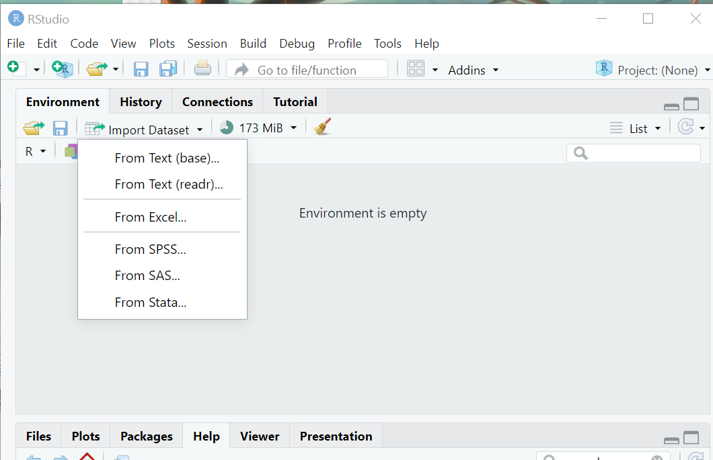
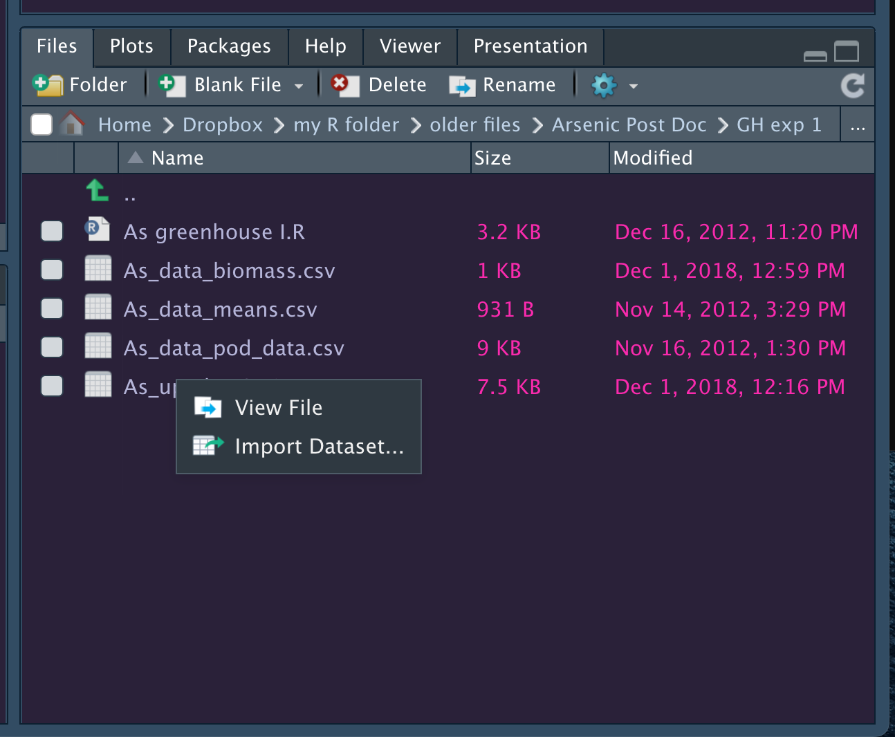
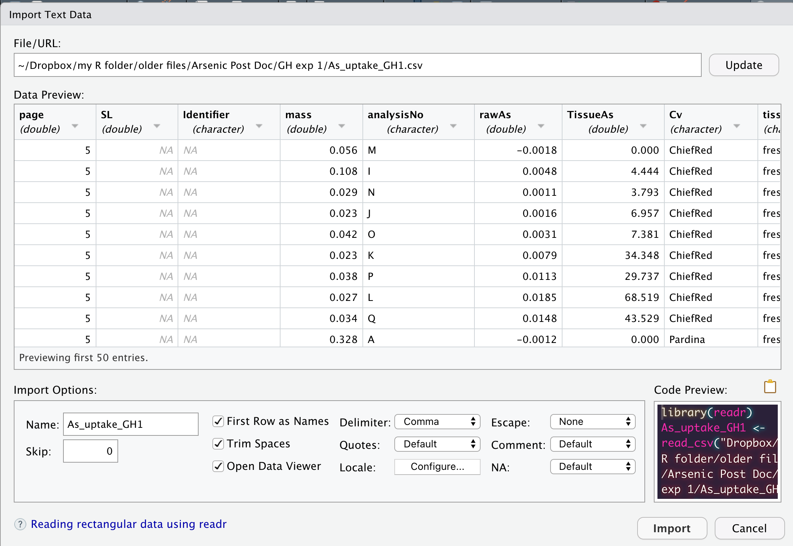

library(here)here() starts at /home/runner/work/r-for-ag-scientists/r-for-ag-scientistshere("directory1", "subdirectory", "my_file.txt")[1] "/home/runner/work/r-for-ag-scientists/r-for-ag-scientists/directory1/subdirectory/my_file.txt"At the end of this lesson, you should:
While you can simulate data or load existing data sets associated with packages for your research, most of you will need to load pre-existing data sets from you computer, or a cloud server, some other external device.
The first thing you need to understand is the working directory and file paths. When an R session is initiated, it ascertains what the root working directory is based on the default settings for your R installation and any other.
You can check this with getwd(). You can set the file path relative to the current working directory or set an absolute path (that is, independent of your current directory). You can read more about absolute and relative paths here.
When opening an R project (an .Rproj file), the working directory is automatically set to the directory where the .Rproj is located. Otherise, you can set the working directory using setwd() or under “Session” in the RStudio Ribbon.
When working with an R notebook like a Quarto document or an Rmarkdown document, the working directory within code chunks is automatically set to where the quarto document is located on your file system. This is the case regardless of whether you set the working directory or where the .Rproj file is located.
To import a data set located in another directory from where the quarto document is located, you can use bash strategies for navigating up and down directory structures (e.g. “../data/somefile.csv”). Another solution is to use the here.
The function here() in the here package will reconstruct a path based on the system you are using (Windows, Mac, Linux, etc). Each directory must be specified and the final item specified is the file to import.
library(here)here() starts at /home/runner/work/r-for-ag-scientists/r-for-ag-scientistshere("directory1", "subdirectory", "my_file.txt")[1] "/home/runner/work/r-for-ag-scientists/r-for-ag-scientists/directory1/subdirectory/my_file.txt"If you don’t want to load an entire package, but use the function from it, you can use the notation package_name::function(). The code below uses that when calling the here() function: here::here().
There are several ways to import data into R.
knitr::include_graphics(here::here("images", "import_dataset_enviro.png"))
knitr::include_graphics(here::here("images", "import_dataset_file.png"))
Both of them open a new window that looks like this:
knitr::include_graphics(here::here("images", "import_dataset_window.png"))
While these point-and-click interfaces are very convenient, they don’t automatically leave a trail of breadcrumbs to help you repeat the process in the future. But, they do generate R code that we can capture and reuse. They are handy shortcuts that I have found especially helpful when trying to import file formats I work with rarely.
Ultimately, this is how anything is imported into R. As mentioned, first two options listed above are actually tools for generating code that will import a data set through the command-line!
There’s 4 common approaches for importing data into R:
read.csv()read_csv()read_excel()read_delim()read.csv()A very commonly used function for reading in “comma separated values” (CSV) files. I personally like this format because it is not proprietary and is compatible across many operating systems. It also limits all sorts of extraneous formatting that itself is a barrier to reproducible research (e.g. highlighting is discarded once a CSV file is closed).
Example usage:
mycsv1 <- read.csv(here::here("data", "trial_metadata.csv"))Result:
str(mycsv1)'data.frame': 28 obs. of 30 variables:
$ trial : chr "SWIdahoCereals_HWW_PAR_2020" "SWIdahoCereals_SWW_PAR_2020" "SWIdahoCereals_H_W_PAR_2018" "SWIdahoCereals_SWW_PAR_2018" ...
$ program : chr "SWIdahoCereals" "SWIdahoCereals" "SWIdahoCereals" "SWIdahoCereals" ...
$ pi : chr "OWalsh" "OWalsh" "OWalsh" "OWalsh" ...
$ nursery : chr "HWW" "SWW" "H_W" "SWW" ...
$ year : int 2020 2020 2018 2018 2018 2018 2016 2016 2016 2017 ...
$ location : chr "Parma" "Parma" "Parma" "Parma" ...
$ grower_cooperator : chr "UI Parma REE Center" "UI Parma REE Center" "UI Parma REE Center" "UI Parma REE Center" ...
$ irrigation : chr "irrigated" "irrigated" "irrigated" "irrigated" ...
$ latitude : num 43.8 43.8 43.8 43.8 43.8 ...
$ longitude : num -117 -117 -117 -117 -117 ...
$ planting_date : chr "2019-10-07" "2019-10-07" "2017-10-25" "2017-10-25" ...
$ harvest_date : chr "2020-07-21" "2020-07-21" "2018-07-17" "2018-07-17" ...
$ plot_length : int 17 17 17 17 17 17 17 17 17 17 ...
$ plot_width : int 5 5 5 5 5 5 5 5 5 5 ...
$ agronomic_notes : logi NA NA NA NA NA NA ...
$ chemical_trts : logi NA NA NA NA NA NA ...
$ free_lime_pct : logi NA NA NA NA NA NA ...
$ k_ppm : logi NA NA NA NA NA NA ...
$ n_lbs_acre : logi NA NA NA NA NA NA ...
$ npks_lb_acre : logi NA NA NA NA NA NA ...
$ p_ppm : logi NA NA NA NA NA NA ...
$ ph : logi NA NA NA NA NA NA ...
$ previous_crop : logi NA NA NA NA NA NA ...
$ row_spacing_in : logi NA NA NA NA NA NA ...
$ s_ppm : logi NA NA NA NA NA NA ...
$ seed_rate_per_acre: logi NA NA NA NA NA NA ...
$ seed_trt : logi NA NA NA NA NA NA ...
$ soil.type : logi NA NA NA NA NA NA ...
$ soil_om : logi NA NA NA NA NA NA ...
$ exp_design : chr "RCBD" "RCBD" "RCBD" "RCBD" ...Details:
read.csv() is actually a “wrapper” for another function, read.table(). It has taken read.table() and set the default arguments to work with CSV files. read.table() is a more generalized form providing more flexibility.
The default arguments include:
colnames = TRUE: the first row of data is assumed to be the column names * nothing in the data set will be used for row names unless we explicitly indicate so
sep = ",": each data point is separated from another by a comma * a newline indicator is used to separate rows of data
na.strings = c("NA", ""): cells with a either no data (““) or an”NA” will be treated as missing.
if a column of data consists of non-numeric characters, that column vector will be treated as character and not a factor
read_csv()This function is part of readr. It has very similar functionality to read.csv(), but it parses the data a wee bit different.
Example Usage:
First, load the package readr that contains the function read_csv().
library(readr)
mycsv2 <- read_csv(here::here("data", "trial_metadata.csv"))Rows: 28 Columns: 30
── Column specification ────────────────────────────────────────────────────────
Delimiter: ","
chr (8): trial, program, pi, nursery, location, grower_cooperator, irrigat...
dbl (5): year, latitude, longitude, plot_length, plot_width
lgl (15): agronomic_notes, chemical_trts, free_lime_pct, k_ppm, n_lbs_acre,...
date (2): planting_date, harvest_date
ℹ Use `spec()` to retrieve the full column specification for this data.
ℹ Specify the column types or set `show_col_types = FALSE` to quiet this message.Result:
str(mycsv2)spc_tbl_ [28 × 30] (S3: spec_tbl_df/tbl_df/tbl/data.frame)
$ trial : chr [1:28] "SWIdahoCereals_HWW_PAR_2020" "SWIdahoCereals_SWW_PAR_2020" "SWIdahoCereals_H_W_PAR_2018" "SWIdahoCereals_SWW_PAR_2018" ...
$ program : chr [1:28] "SWIdahoCereals" "SWIdahoCereals" "SWIdahoCereals" "SWIdahoCereals" ...
$ pi : chr [1:28] "OWalsh" "OWalsh" "OWalsh" "OWalsh" ...
$ nursery : chr [1:28] "HWW" "SWW" "H_W" "SWW" ...
$ year : num [1:28] 2020 2020 2018 2018 2018 ...
$ location : chr [1:28] "Parma" "Parma" "Parma" "Parma" ...
$ grower_cooperator : chr [1:28] "UI Parma REE Center" "UI Parma REE Center" "UI Parma REE Center" "UI Parma REE Center" ...
$ irrigation : chr [1:28] "irrigated" "irrigated" "irrigated" "irrigated" ...
$ latitude : num [1:28] 43.8 43.8 43.8 43.8 43.8 ...
$ longitude : num [1:28] -117 -117 -117 -117 -117 ...
$ planting_date : Date[1:28], format: "2019-10-07" "2019-10-07" ...
$ harvest_date : Date[1:28], format: "2020-07-21" "2020-07-21" ...
$ plot_length : num [1:28] 17 17 17 17 17 17 17 17 17 17 ...
$ plot_width : num [1:28] 5 5 5 5 5 5 5 5 5 5 ...
$ agronomic_notes : logi [1:28] NA NA NA NA NA NA ...
$ chemical_trts : logi [1:28] NA NA NA NA NA NA ...
$ free_lime_pct : logi [1:28] NA NA NA NA NA NA ...
$ k_ppm : logi [1:28] NA NA NA NA NA NA ...
$ n_lbs_acre : logi [1:28] NA NA NA NA NA NA ...
$ npks_lb_acre : logi [1:28] NA NA NA NA NA NA ...
$ p_ppm : logi [1:28] NA NA NA NA NA NA ...
$ ph : logi [1:28] NA NA NA NA NA NA ...
$ previous_crop : logi [1:28] NA NA NA NA NA NA ...
$ row_spacing_in : logi [1:28] NA NA NA NA NA NA ...
$ s_ppm : logi [1:28] NA NA NA NA NA NA ...
$ seed_rate_per_acre: logi [1:28] NA NA NA NA NA NA ...
$ seed_trt : logi [1:28] NA NA NA NA NA NA ...
$ soil type : logi [1:28] NA NA NA NA NA NA ...
$ soil_om : logi [1:28] NA NA NA NA NA NA ...
$ exp_design : chr [1:28] "RCBD" "RCBD" "RCBD" "RCBD" ...
- attr(*, "spec")=
.. cols(
.. trial = col_character(),
.. program = col_character(),
.. pi = col_character(),
.. nursery = col_character(),
.. year = col_double(),
.. location = col_character(),
.. grower_cooperator = col_character(),
.. irrigation = col_character(),
.. latitude = col_double(),
.. longitude = col_double(),
.. planting_date = col_date(format = ""),
.. harvest_date = col_date(format = ""),
.. plot_length = col_double(),
.. plot_width = col_double(),
.. agronomic_notes = col_logical(),
.. chemical_trts = col_logical(),
.. free_lime_pct = col_logical(),
.. k_ppm = col_logical(),
.. n_lbs_acre = col_logical(),
.. npks_lb_acre = col_logical(),
.. p_ppm = col_logical(),
.. ph = col_logical(),
.. previous_crop = col_logical(),
.. row_spacing_in = col_logical(),
.. s_ppm = col_logical(),
.. seed_rate_per_acre = col_logical(),
.. seed_trt = col_logical(),
.. `soil type` = col_logical(),
.. soil_om = col_logical(),
.. exp_design = col_character()
.. )
- attr(*, "problems")=<externalptr> Details:
This function takes similar arguments to read.csv(), although the output is more extensive.
read.csv(), the default separator is “,”, missing datea are coded as empty string "" or NA and the first line is assumed to be the column headertrim_ws will remove leading and trailing whitespace for data entries. So the column header ” soil pH” will become “soil pH”.read.csv() (including spaces and special characters). I’m honestly not fond of this behavior and usually clean up weird column names with janitor::clean_names().The output is largely similar, although read_csv() actually parses dates, unlike read.csv().
read_excel()This function will read in MS Excel files (reliably)! It is truly amazing. For many many years, it was cumbersome and/or impossible to read Excel files direclty into R.
Example Usage:
Load the package that contains the function read_excel(), readxl.
library(readxl)
myxl <- read_excel(here::here("data", "field_trial_2009.xlsx"),
sheet = "site_02",
trim_ws = TRUE,
na = c("", "NA"))Results:
str(myxl)tibble [80 × 30] (S3: tbl_df/tbl/data.frame)
$ plot : num [1:80] 1 2 3 4 5 6 7 8 9 10 ...
$ bloc : num [1:80] 1 1 1 1 1 1 1 1 1 1 ...
$ rep : num [1:80] 1 1 1 1 1 1 1 1 1 1 ...
$ Ptrt : chr [1:80] "high" "high" "high" "high" ...
$ inoc : chr [1:80] "myco" "myco" "myco" "myco" ...
$ Cv : chr [1:80] "OTIS" "ALPOWA" "BlancaG" "WALWORTH" ...
$ order : num [1:80] 1 2 3 4 5 17 18 16 20 19 ...
$ height : num [1:80] 49 48.7 40.3 45.7 59 ...
$ spikes : num [1:80] NA 240 192 360 216 340 220 228 208 256 ...
$ tstwt : num [1:80] 61.9 61.2 61.3 60.6 61.7 60.2 61.2 61.2 62.1 62.1 ...
$ HI : num [1:80] 0.385 0.375 0.444 0.385 0.481 0.387 0.5 0.5 0.474 0.409 ...
$ YieldKg : num [1:80] 1144 1274 1026 1026 922 ...
$ YieldBu : num [1:80] 16.5 18.5 14.9 15.1 13.3 ...
$ tkw : num [1:80] 35.1 32.2 37.6 30.8 40.1 ...
$ myco : num [1:80] 37.5 30 35.7 15.4 14.3 ...
$ PT1 : num [1:80] 4391 4500 4546 3436 4121 ...
$ PT2 : num [1:80] 1040 726 605 702 1036 ...
$ PT3 : num [1:80] 375 85.5 315.6 247.4 161.9 ...
$ Pseeds : num [1:80] 3182 2523 3156 3389 2473 ...
$ cruc : num [1:80] 6 10 4 5 2 3 9 7 39 66 ...
$ Cu : num [1:80] 6.11 4.72 5.99 5.69 4.48 ...
$ Fe : num [1:80] 46.4 27.2 46.8 36.5 34.2 ...
$ Mn : num [1:80] 28 21.5 28.2 28.4 23.8 ...
$ Zn : num [1:80] 16.2 14.2 18.3 22.1 15.1 ...
$ Protein : num [1:80] 14.3 12.7 14.7 16.3 12 ...
$ SDS : num [1:80] 9.9 9.9 13.1 12.5 9.6 13.7 13.4 9.3 9.6 10.2 ...
$ PT1_2 : num [1:80] 4371 4455 4442 3481 4146 ...
$ PT2_2 : num [1:80] 968 659 544 635 965 ...
$ PT3_2 : num [1:80] 387 104 328 262 179 ...
$ Pseeds_2: num [1:80] 3103 2482 3083 3296 2434 ...Details
read_excel() will import the first sheet unless it named by position (e.g. 1, 2, 3) or name (like in the previous example).""read_csv().range for setting a custom range of cells to read in.read_delim()For reading in text files! It’s pretty simple. Text files are not used terribly frequently, but I see them now and then with really huge files, such as genotyping data.
mytxt <- read.delim(here::here("data", "genotypic_data.txt"))Details
This function is a more extensive version of read.csv(). It has a longer list of argument and slight different default values for those arguments that read.csv. Run ?write.delim in the console for more details.
It’s useful to understand how R has read a data set into an R session. R has opened a connection to the file that you have specified, read file information into the R session using system memory (your computer’s RAM), and then closed the connection.
This is a one-way process from your file to R
Once a file is loaded and the connection closed, there is no longer any link between the object loaded into memory in R and its origin file (located on on your computer, a cloud server, etc). Any changes made to the object in R will not change the file on your computer unless you explicitly run scripts to overwrite that file. This is good thing; it gives you freedom to experiment with and manipulate an object without worrying about messing up the original file.
We will discuss later how to export R objects to your file system when you want to capture changes made to an object.
Things frequently go wrong when importing data. This can sometimes be corrected by changing the import arguments, but often it indicates problems with the incoming data.
Some possible errors and how to fix them:
Some variables which should be numeric are characters instead. At least one item contains an unexpected character that renders that observation - and the rest of the vector - as a character. This might be two decimal points, a comma, or a “O” instead of “0”. If possible, manually inspect the data and correct the error.
Missing data are not coded as missing. Import functions have default values for what is interpreted as missing. Check the documentation and adjust the arguments as needed to capture what code a data sets is using to indicate missing data.
The best choice is to properly arrange your data set prior to import. Broman & Woo (2018) provides some straightforward recommendations on how to manage data in spreadsheets.
The instructions provided above are for importing tabular data that is generally not “big data”.
Big data is a subjective term that is system-dependent (and is rapidly changing as PC computing power and memory increases). Some personal computers can easily handle a 50 Mb file, while others cannot. If you are waiting more than 5 seconds for your data to import, then consider other options. A deep discussion about how to handle large data sets are beyond the scope of this workshop, but at the very minimum, consider the package data.table and its high-performance functions for reading and writing data, fread() and fwrite(). If your data sets are too big to load directly into R, consider arrow.
You may also be working with data types that are not strictly tabular, at least in the form they are stored on a computer. Here are some common non-tabular data types and packages to handle import of those.
haven::read_sas()haven::read_sav()…and so much more.
Note how easy it is to import data from the ‘Files’ pane; navigate to the file and click on it! It’s important that that the code generated is saved so (1) you can reuse the code; and (2) so you can link the data set loaded to a set of R commands you ran should you ever need to rerun them (which is highly likely).